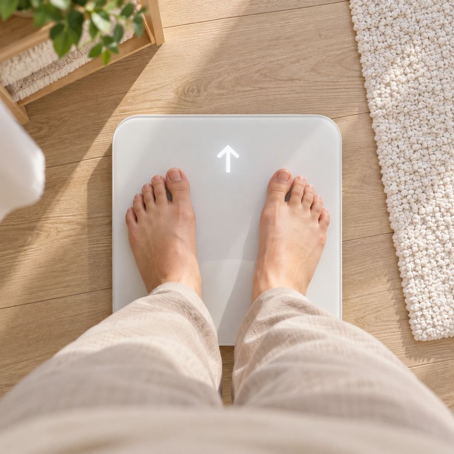

不是你不夠努力，是身體在提醒你了

看你想先從哪裡開始
一對一當面進行，你問什麼我都好好回答
＊MEAD 為健康管理輔助工具，非醫療診斷或治療。
健康管理 × 體重管理師
我曾經是健檢報告一打開，就看到一排紅字的人。
以前壓力一大就靠吃紓壓，最誇張的時候，一個晚上可以吃掉一份香雞排、30 片新貴派，再配 1000 毫升的可樂，然後就去睡覺 😂
168、生酮都試過，還是瘦了又胖回來。
那時候，一位認識我母親 20 年、在 Nu Skin 做健康管理的姐姐，知道我的狀況後主動來關心我。我本來很排斥，最後抱著試試看的心情，做了第一次 MEAD 健康需求評估。
那是我第一次把作息、壓力和身體狀況放在一起看懂。之後一步一步調整生活習慣，整個人輕鬆很多，也找回了自己的節奏。
也因為這段經驗，我考了乙級體重管理師，
想陪更多跟我一樣卡住的人，一起找回自己的節奏。
日日暖陽陪你把照顧自己變成日常
預約健康評估
我會先跟你聊聊作息、睡眠、活動量和壓力，再用 MEAD 量測十二經絡的能量平衡狀況作為參考，最後整理成適合你的日常保養方向。MEAD 是健康管理的輔助工具，不是醫療診斷。
三機體驗是用洗臉機、鎂光機、雲朵機，幫你做臉部與身體的舒緩保養，也是免費的。不用先做健康評估，可以單獨預約；想兩個都做，就分兩次來。三機體驗是放鬆與保養的體驗，不是醫療行為。
什麼都不用準備，穿舒適的衣服來就好。如果你平常有在吃保健品，可以拍張照片帶來，我們一起整理。
服務地點在高雄市前鎮區（鄰近三多商圈），採預約制。留下聯絡方式和簡單的需求，我會主動跟你聯繫約時間；想直接聊，也可以加日日暖陽的 LINE。
留下聯絡方式，湯湯會主動跟你約時間
我想預約 想直接聊也可以加 LINE：@438zjonh · 高雄・預約制